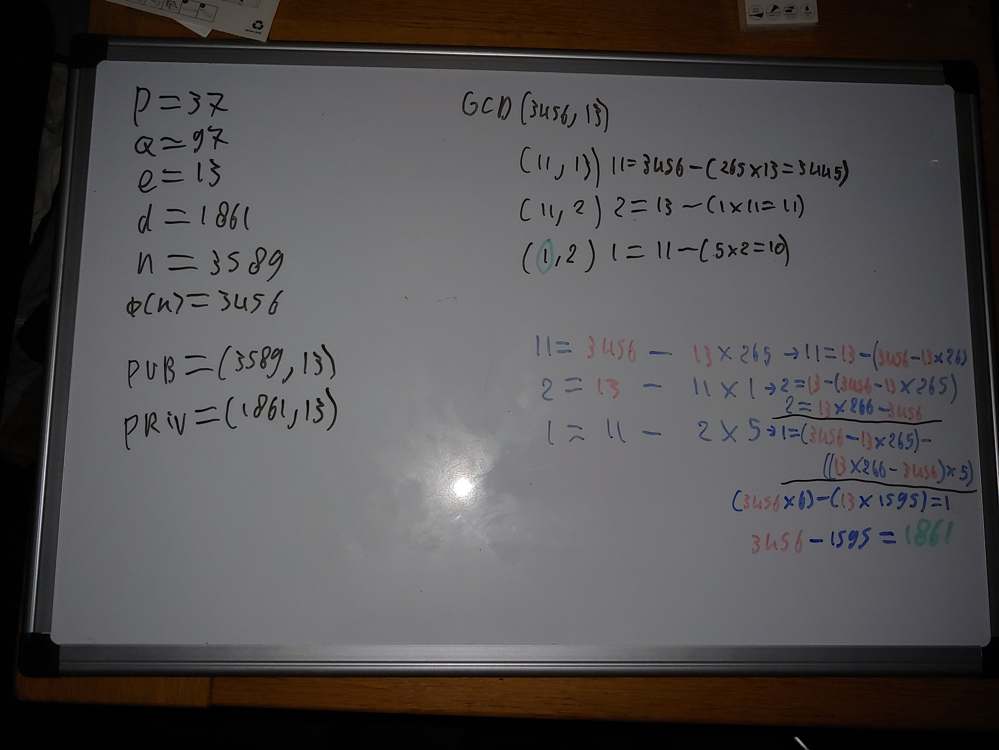
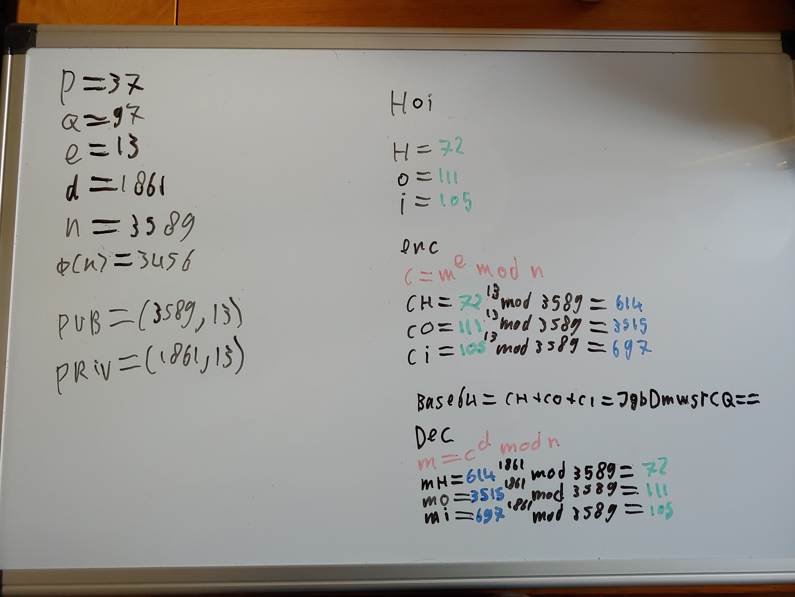

Een van de uitdagingen die ik graag wilde doen, was de wiskunde achter RSA begrijpen en er ook iets handmatig mee versleutelen.
Workshop
Ik heb beide workshops over cryptografie gevolgd, deze workshops waren zeer interessant en tegelijkertijd lastig. Ik heb encryptie altijd wel interessant gevonden maar nooit helemaal begrepen hoe dit nu van binnen werkt en waarom dit zo enorm krachtig kan zijn. Omdat ik hier meer van wilde weten vond ik het een goed idee om mijn basiskennis uit te bereiden met de wiskundige werking van RSA-encryptie. Mijn doel is dan ook om te begrijpen hoe dit werkt en dit zelf een keer handmatig gedaan te hebben.
Priemgetallen
Priemgetallen worden gebruikt bij RSA-encryptie. Ik wist niet 100% wat priemgetallen zijn en daarom heb ik eerst even moeten onderzoeken wat priemgetallen precies zijn.
Een priemgetal is een getal dat alleen deelbaar is door 1 en door zichzelf als een rond getal. Als voorbeeld als ik 45 pak; dit getal is deelbaar door 1 (45 / 1 = 45), door zichzelf (45 / 45 = 1), maar dit getal is ook deelbaar door 5 (45 / 5 = 9). 45 is dus geen priemgetal. Een ander getal: 37 is deelbaar door 1 en zichzelf, maar er zijn verder geen getallen die deelbaar zijn dat uitkomt op een rond getal. 37 is dus een priemgetal.
Algoritme
Om het algoritme te begrijpen heb ik nog vaak in de slides van de workshops gekeken plus nogal wat op internet opgezocht. Ik heb dit thuis stap voor stap uitgeschreven op een whiteboard. In werkelijkheid worden hier enorm grote (1024, 2048 of 4096 bit) getallen voor gebruikt, om te begrijpen wat er gebeurt gebruik ik hele kleine getallen. Per regel leg ik uit wat het doet.
- p = 37; p is een van de twee priemgetallen die nodig zijn om de keys mee uit te rekenen, de andere is q. Beide getallen moeten private zijn.
- q = 97; q is het andere priemgetal.
- n = p * q; ( 37 * 97 = 3589). n wordt de modulus genoemd.
- φ(n) = (p - 1) * (q - 1); ((37 - 1 = 36) * (97 - 1 = 96) = 3456). φ(n) wordt phi genoemd.
- e = 13; e is het andere deel van de public key. e moet gekozen worden als (1 < e < φ(n)). Dus e moet tussen 1 en φ(n) zitten.
- pub = (n, e) = (13, 3589); public key is makkelijk om uit te rekenen.
- priv = (d, e) = ; private key is wat moelijker, daar ga ik verder op in in het hoofdstuk Extended Euclidean algorithm.

Afbeelding 1 RSA-algoritme
Extended Euclidean algorithm
Om d te berekenen heb ik de modulaire multiplicatieve inverse van e nodig (e-1). Dan is d ≡ e. Dit is uit te rekenen met het Extended Euclidean algorithm. Ook hier ga ik per regel (rechter kant) vertellen wat er gebeurt.
- Gcd(3456, 13); Gcd staat voor Greatest common divisor, hier bereken ik de Gcd van φ(n) en e (3456, 13).
- (11, 13) 11 = 3456 - (265 * 13 = 3445); Wat ik hier doe is, ik kijk hoe vaak 13 van 3456 af kan; dat is 265 keer. 265 * 13 = 3445 en als ik dan 3445 van 3456 af haal, heb ik 11 over.
- (11, 2) 2 = 13 - (1 * 11 = 11); Hier haal ik zo vaak mogelijk 11 van 13 af (een keer dus) en hou ik 2 over.
- (1, 2) 1 = 11 - (5 * 2 = 10); Hier haal ik zo vaak mogelijk 2 van 11 af (5 * 2) en hou ik 1 over.
Dit zou ik nog kunnen doen met 2 dan hou ik 0 over. Een stap terug en ik weet wat mijn Gcd is, 1. Hierna ga ik backwards substitution toepassen. Dat is het gedeelte in kleurtjes rechts onder.
- 11 = 3456 - 11 x 265 -> 11 = 13 - (3456 - 13 * 265); Dit laat zien dat het eerste deel voor het pijltje hetzelfde is als het tweede deel na het pijltje.
- 2 = 13 - 11 * 1 -> 2 = 13 - (3456 - 13 * 265); Hieronder staat nog 2 = 13 * 266 - 3456. dat komt omdat dat bovenstaande hetzelfde neergeschreven kan worden als dat onderste. Dit is omdat als ik die eerste 13 bij die 265 * 13 optel, dan krijg je 266 * 13.
- 1 = 11 - 2 * 5 -> 1 = (3456 - 13 * 265) - ((13 * 266 - 3456) * 5);
- In totaal zijn er dus 5 * 266, 1 * 265 en 6 * 3456. (3456 * 6) = 20736 en 13 * ((5 * 266) + (1 * 265) = 1595) = 1595 * 13 = 20735.
- 20736 - 20735 = 1.
- Dan het totaal 3456 - 1595 = 1861.
De Modulaire multiplicatieve inverse van 13 is dus 1861 en is d (1861, 13)
Afbeelding 2 Modulaire multiplicatieve inverse
Resultaat
Het gehele resultaat is dan als volgt:
- p = 37;
- q = 97;
- e = 13;
- d = 1861;
- n = 3589;
- φ(n) = 3456;
- pub = (3589, 13);
- priv = (1861, 13).
Nu ga ik proberen het woord 'Hoi' te encrypten en decrypten. Als ik de letters van 'Hoi' naar decimaal zet krijg ik het volgende:
- H = 72;
- o = 111;
- i = 105.
Vervolgens kan ik deze data encrypten door middel van de volgende berekening: c = me mod n.
- cH = 7213 mod 3589 = 614;
- co = 11113 mod 3589 = 3515;
- ci = 10513 mod 3589 = 697.
Als ik deze text aan elkaar plak als: cH + co + ci, dan krijg ik byte data. Als ik deze naar base64 zet (zo wordt encrypted verkeer meestal verstuurd) krijg ik 'JgbDmwsrCQ=='. Dit is de encrypted data 'Hoi' zoals hij verstuurd wordt. Als ik deze weer decrypt dan wordt dat gedaan met de volgende berekening: m = cd mod n.
- mH = 6141861 mod 3589 = 72;
- mo = 35151861 mod 3589 = 111;
- mi = 6971861 mod 3589 = 105.
Als ik deze data weer terug naar ASCII omzet krijg ik weer mijn text 'Hoi'.
Afbeelding 3 Resultaat
Conclusie
Ik vond dit leerzaam en leuk om gedaan te hebben. Waar ik wel moeite mee had was het uitrekenen van de Modulaire multiplicatieve inverse van e. Vooral het backwards substitution gedeelte. Ik heb hiervoor veel verschillende filmpjes bekeken en er zelfs nog met mijn docent over gesproken en uiteindelijk is het wel gelukt, maar dat heeft wel een aantal pogingen geduurd. Ik denk dat ik hier veel mee heb geleerd, qua RSA-encryptie zelf maar ook wiskundig.